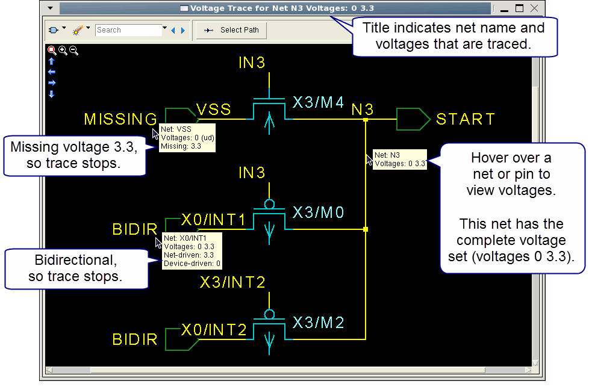

You can trace
a set of voltages using the Voltage Trace GUI in Calibre RVE for
PERC. The Voltage Trace GUI displays the nets, pins, and devices
that have a given voltage set—this can help when debugging voltage
collisions, in which an unwanted voltage appears on a net.
Prerequisites
A Calibre PERC
license. See “Calibre PERC” in the Calibre
Administrator’s Guide for more information.
A
Mask SVDB Directory containing Calibre PERC results or a DFM Database
containing Calibre PERC LDL results.
The database must be from
a hierarchical run (the ‑hier command line option) for the Voltage
Trace GUI to be available.
The
command perc::create_voltage_path must be used in the initialization procedure
for the rule check.
The
Calibre PERC database is open in Calibre RVE for PERC.
(Optional)
Choose the desired setting for “Show PERC voltage paths in a new
Voltage Trace window” on the Options tab
in the LVS/PERC/PEX category. If this setting
is disabled, the current window is closed before opening a new window.
Procedure
- Enable View > Result Options > Details to
display result details.
- Enable View > Result Options > Result Data Pane.
- Select a result in the tree
view that is from a check with the perc::create_voltage_path command.
- Right-click
a result and choose if the menu
option is present. This step is only needed once during the Calibre
RVE session.
- Right-click a result and choose
either Trace > Multiple Voltages (for
a net result) or Trace > Pin pin-net > Multiple Voltages for a
device result. If the selection Multiple Voltages is not present,
the net does not have multiple voltages. You can also right-click
in the Result Data pane for the Trace menu.
- Select either “All Voltages”
or the desired voltages to debug.
- Enable “Trace voltages as
a set.”
- Click OK.
A schematic view of the voltage
trace is displayed, as shown in Figure 1 in the “Results” section.
The trace includes elements with all of the voltages selected in
Step 5.a, that is, elements that include the complete set of
voltages. The trace ends when any of the voltages in the set is
missing or one or more of the voltages is bidirectional.
- Hover over the end point in
the trace to see the voltages that are present. (A voltage that
is applied directly to a net due to a command in the rule file has the
“ud” (user-defined) attribute.)
- (Optional) Click any schematic
element to highlight it in connected design tools and the Internal
Schematic Viewer. If you previously closed the Internal Schematic
Viewer, choose View > Schematics to
open it again.
- (Optional) Click the Select
Path button and select elements to form a path from
start to end. Click Done to end the path
selection. The path is saved for the duration of the Calibre RVE
session.
- (Optional) You can right-click
any net and choose Trace Voltage
on Net net to trace the voltage on
that net in a new Voltage Trace window.
This can be useful in these
circumstances:
The hover
text for the net does not include voltage information. For example,
a net that is not directly a part of the trace, such as the gate
of a device, does not include voltage information. You can right-click
such a net and display a new voltage trace.
The complete
voltage trace is not displayed due to the number of elements. You
can right-click a net and continue the voltage trace.
Results
An example of the Trace Voltage GUI
for multiple voltages (a voltage set) is shown in Figure 1. In this case the trace was requested
for the voltages 0 and 3.3 for Pin M1:G—IN2, as shown in Step 5. Although the trace was requested
for net IN2 connected to the gate pin, the Voltage Trace GUI reports
that net N3 is traced. This is because net IN2 in placement X4 is
named N3 at the highest level of the net, and the Voltage Trace
GUI reports nets names at the highest level.
Figure 1. Viewing a Multiple Voltage
Set in the Voltage Trace GUI